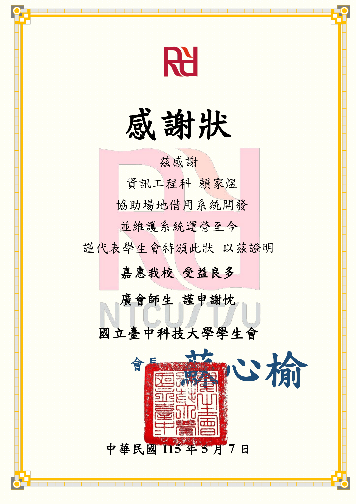
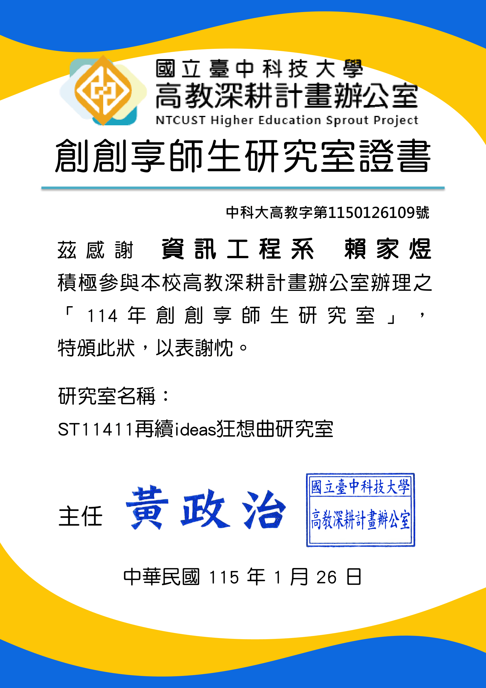

| 類別 | 五專資訊工程科已修課程 | 成績 | 對應雲科資管系課程 |
|---|---|---|---|
| 程式技術核心 | 物件導向程式設計 | __ | 程式設計（一）（二）、軟體品質管理 |
| 資料結構與演算法 | __ | 資料結構、決策支援理論 | |
| 資料庫與 AI | 人工智慧概論 | __ | 人工智慧應用及實務、資料探勘與巨量資料分析 |
| 資料庫 | __ | 資料庫系統、管理資訊系統 | |
| 系統與網路應用 | 網路應用程式應用 | __ | 網路應用程式開發、電子商務 |
| App 程式應用 | __ | 行動商務、使用者經驗設計 | |
| 系統分析與設計 | __ | 系統分析與設計、策略資訊管理 | |
| 數學與理論基礎 | 訊號與系統、微積分、統計學 | __ | 管理數學、統計學 |

我是賴家煜，就讀於國立臺中科技大學五專部資訊工程科。回顧進入資訊領域的起點，與其說是一個清晰的志向，不如說是一種對「想解決問題」的天生特質。從小我就對解決問題格外感興趣且充滿成就感，時常在思考：這樣處理能否解決問題？是否有更快、更有效率的方法？換一個零件能不能讓它重新運作？這種面對問題時想搞清楚根源、而非繞路迴避的習慣，在我接觸程式設計後找到了最適合它生長的土壤。「科技始終來自於人性」，當我在專一接觸到程式設計的課程時，不禁讓我思考，我是否可以運用我在學校學到的技術去幫助我解決生活上的問題。
在五專的課程體系中，我不是在寫程式，就是在寫程式的路上，每當我遇到技術上的問題，我都會翻翻課本或向老師諮詢，遇到想做成的效果，就在網路上搜尋什麼樣的技術可以幫助我達成最終的目標，我的技術能力就是像這樣一來一回的自學慢慢的堆積上去。學習前端設計、行動裝置應用，撰寫家人工作上使用的點貨系統，優化工作流程，節省時間。物件導向課讓我理解更聰明的設計架構。五專後期，生成式AI、電腦視覺逐漸普及，我選修人工智慧概論補齊我的知識盲區，讓我不只是會跑模型，而是能讀懂訓練曲線而讓實驗擁有可解釋性。最讓我印象深刻的經歷是，那時我正在開發友通資訊的PCB自動化程式，正在為如何讓程式看懂PCB版上的零件聚落而發愁，而訊號與系統的選修課中，剛好講到卷積運算與CNN的演算法，赫然發現捲機運算的演算法可以剛好解決在 DFI 專案中遇到的問題，後續就開發出自行設計的「卷積文字密度演算法」（用於 PCB 元件圖白邊切割）。 那一刻我才體會：課堂上抽象的理論，原來是能直接應用進實作的環境當中。
真正讓我決定轉向資管的，是我三件實務經驗累積的發現。第一件是校園場地租借系統產學合作案——校方對系統的描述只有「希望能透過APP去管理學校的場地」，並對用戶端的租借流程、應用場景一無所知，我們需要理解需求並設計一套UI/UX都要人性化且好用的系統，這樣才能讓校方與學生客戶端去主動的使用這套系統，而不是排斥。而工程訓練中沒有任何一堂課教我們怎麼把這句話拆成功能規格，只有對技術的雕琢。
第二件是友通資訊股份有限公司的元件自動化製圖工具——從需求訪談、報價、時程協商到文件交付，全部由我一人主導。技術不是最難的，最難的是該如何與甲方溝通？如何讓使用者覺得方便不排斥使用？我希望可以進修雲科資管系中的專案管理課程，讓我從「憑直覺承接案子」轉變為「能向客戶與團隊清楚說明決策邏輯」的角色。
第三件是樂聯工業內部 ERP 系統外掛除錯，該系統已經運作15年，無原始開發者，也無明確系統規格文件，甚至沒有測試環境，部署及上線，技術債從來不只是程式碼問題。這套陪著公司日常運作十多年的 ERP 外掛背後，是溝通模式、決策流程、技術採用邏輯，整套組織運作模式全嵌在難以閱讀的程式碼裡。在不了解公司內部的use case情況也無法輕易除錯。
經過以上實務經驗，發覺我所寫出來的產品都需要更符合客戶所期望的，理解市場需求，才能創造價值，因此我期望能透過雲科資管的訓練，讓我能擁有資訊技術的同時，與企業職能接軌並具管理功能整合之實作能力

我的學習計畫以「延續技術深度、拓展管理視野、邁向國際化人才」為核心，對應雲科資管系所之「資訊科技與管理並重」與「資訊系統開發與管理」兩大特色，分為短、中、長期三階段規劃如下。
| 既有能力（資工訓練） | 想培養的能力 | 雲科資管對應課程／發展方向 |
|---|---|---|
| 程式開發、AI/CV 研究 | 系統化的需求分析與規格制定能力 | 系統分析與設計、管理資訊系統 |
| AI / 電腦視覺實作 | 大規模資料處理與企業級資料應用 | 資料探勘與巨量資料分析、人工智慧應用及實務 |
| 非正式 PM 經驗 | 標準化專案管理框架 | 專案管理（PMBOK）、軟體品質管理 |
| 接案中的商業溝通 | 管理理論與決策思維 | 管理學、溝通技巧、決策支援系統 |
| 技術實作能力 | 策略性與組織層次的整合視野 | 策略資訊管理、資訊技術與組織整合 |
短期目標聚焦於「深化研究實力、培養管理視野、累積英文實戰」三條主軸並進。於雲科資管系所提供之課程中挑選下列五門作為核心修課方向，並同步推進 AI Agent 研究與英文能力強化：
| 雲科資管精選課程 | 想學到的核心能力 | 應用場景／延伸方向 |
|---|---|---|
| 管理資訊系統 | 資訊系統如何影響組織決策、IS 在組織中的角色與管理控制理論 | 強化過去承接 PM 工作的決策邏輯（DFI、校園場地租借） |
| 系統分析與設計 | 需求工程方法論（UML、UseCase、需求訪談與規格文件標準流程） | 把「希望系統好用一點」這類模糊需求轉譯為可執行規格的系統化能力 |
| 專案管理 | PMBOK 標準框架、時程估算、風險與資源管理、利害關係人溝通 | 建立能向客戶清楚說明的報價與時程決策邏輯，銜接 DFI 接案實務 |
| 資料探勘與巨量資料分析 （黃淑芬老師） |
結構化／非結構化資料的探勘流程、機器學習在企業情境的落地 | 銜接 AI/CV 研究到企業層級的資料應用，作為碩士研究的方法論基礎 |
| 使用者經驗設計 | UX 評估框架、可用性測試、互動設計原則、使用者研究方法 | 強化前端開發中的 UX 方法論（架站雲模板開發、Grade AI 操作介面） |
研究主題聚焦將 YOLO 物件偵測與 CNN-OCR 整合應用於自動化閱卷系統。此專案源於一個實際痛點：傳統紙本閱卷耗時且易受主觀影響，現有 OCR 方案面對手寫字跡與雜訊時準確率明顯不足。系統核心架構分為兩層：前端以 YOLOv7 對試卷進行區域偵測（題目、作答區、題號），後端以 CNN-OCR 模型辨識手寫與印刷文字，最終透過排序與匹配演算法將辨識結果對應至標準答案，輸出結構化評分結果。
研究過程中，我系統性導入資料增強策略，將手寫樣本由 2,976 筆擴充至 23,806 筆，並針對 YOLO 輸出邊界框設計結合歐氏距離的客製化匹配邏輯。從資料標註、增強策略，到匹配邏輯的客製化實作，每一個環節都需要在理論與工程判斷之間反覆權衡。從問題定義、實驗設計到論文撰寫的完整流程，讓我體會到學術嚴謹性與工程執行力高度相通——對應雲科資管系核心能力中的「問題解決能力」與「分析能力」。

這段研究建立了「清楚定義問題、嚴謹執行、誠實面對模型限制」的結構化思維，我實際完成：
| 指標 | 數值 | 發表場次 |
|---|---|---|
| YOLOv7 區域偵測 mAP@0.5（資料增強前） | 93% | TWELF 2025 |
| YOLOv7 區域偵測 mAP@0.5（資料增強後） | 97.1% | FC 2025 |
| CNN-OCR 模型驗證準確率 | 95% | FC 2025 |


參與校內專題競賽，負責將 YOLOv7 與 CNN-OCR 演算法落地為「Grade AI 數位評量系統」。我主導全端架構（Next.js + FastAPI + MySQL）與系統整合，實現從試卷影像上傳、AI 自動批改到成績報表匯出的完整閉環，作品最終入選 2025 年專題成果展。
同年，我參加校內專題競賽。系統以研討會論文的技術核心為基礎，進一步將 YOLOv7 + CNN-OCR 演算法落地為可實際操作的網頁應用程式——Grade AI。系統採前後端分離架構，以 Next.js 建構教師操作介面、FastAPI 處理業務邏輯、MySQL 儲存成績與批改紀錄，實現從試卷影像上傳、AI 辨識到成績報表的完整數位評量閉環，並於 2025 年資訊與流通學院專題成果展中入選展出。
將 AI pipeline 整合進 Web 應用時，最大的挑戰是非同步流程設計——YOLO 偵測、CNN-OCR 辨識、答案匹配三個串行推論步驟無法即時回應，必須設計非阻塞的狀態回饋機制。同時，目標使用者是對技術不熟悉的教師，操作流程被刻意拆解為三個明確階段，並在每個節點加入視覺回饋。這個過程讓我意識到，工程實作的品質不只體現在後端效能，更體現在「使用者能否順暢完成任務」——這正是雲科資管「使用者經驗設計」課程要訓練的核心。
Grade AI 的完成代表這套技術框架從學術驗證走向了實際可部署的產品形態。入選成果展不只是對研究成果的肯定，更是一次以真實使用情境檢驗系統設計的機會。從演算法到產品的完整開發歷程，讓我建立起對「端到端交付」的直接理解——一個好的技術方案，必須在能跑通的同時，也讓使用者看得懂、用得上。這正是我認為雲科資管「資訊系統開發與管理——兼顧管理廣度及技術深度」最珍貴的訓練。

2023 年，我以「連我阿公都會——手把手教你架網站」參加 iThome 鐵人賽，完成 HTML 到 Python Flask 的全端入門系列教學。因為發現平時查詢技術文章總會來到這個網站，促使我也想透過此社群分享並推廣技術。參賽的初衷很明確：我想證明自己能達成 30 天不間斷的技術寫作挑戰，並且全力以赴，把奪得鐵人賽獎項作為最大的目標。
三十天每天發文，比想像中辛苦。除了在課業與日常之間擠出寫作時間，更大的挑戰是把技術概念解釋到讓人真正看懂。自己會用一個東西、和能夠清楚說明它的運作邏輯，是完全不同的兩件事——每當試圖把某個概念寫清楚，才發現有些環節自己其實只是「大概知道」。這迫使我在寫每篇文章之前必須先把底層細節真正搞懂，再以讀者能理解的方式重新組織。這個過程是整個挑戰中最耗心力、卻也最有收穫的部分。
最大的收穫是技術與寫作的雙重升級。我不僅讓技術底子更加紮實，也大幅提升了寫作技巧
這對應雲科資管系核心能力中的「表達溝通能力」——一個技術人能否說清楚，往往決定了團隊能否真正接住他的成果。


主導開發 ｜ 需求訪談 ｜ 系統架構設計 ｜ 系統文件撰寫主導。從演算法原理說明、API 介面文件到操作手冊，完整建立可供後續工程師接手維護的技術知識庫。
2025 至 2026 年間，我主導承接友通資訊（DFI）的 PCB 元件自動化製圖工具開發案。從需求訪談、報價、時程協商、系統設計、卷積文字密度演算法設計、Python 實作，到主導系統文件的撰寫與交付——所有核心技術決策由我負責，並與公司內部工程師、產品端進行多次需求對齊與驗收溝通，確保技術產出符合實際生產線需求。
技術核心是自訂的影像處理管線。在修習信號與系統課程時，我深入理解卷積（Convolution）運算的物理意義——對訊號局部特徵的加權疊加。我將此概念遷移至文字影像分析，設計「卷積文字密度演算法」：以一維卷積核掃描行列方向像素值、計算局部密度分布，自動推算切割座標。這正是 CNN 最底層的核心計算，也讓我對深度學習建立了更直接的理解連結。
商業面則涉及報價、時程協商、需求釐清與交付確認，並同步建立完整的系統技術文件——這些是工程訓練中沒有教的內容。它讓我清楚意識到：未來如果要繼續承接更複雜的企業專案，必須要有系統化的專案管理 ／ 軟體品質管理 ／ 知識管理訓練，這正是我選擇雲科資管的關鍵理由。

選擇卷積文字密度演算法而非深度學習切割模型，我實際做的四項關鍵判斷：
工具正式交付後，將工程師原本數小時的手動作業縮短至數秒，並獲得公司年會專案評比第三名肯定。我在此專案中除主導開發外，另一項關鍵貢獻是系統文件的撰寫與交付——涵蓋演算法原理、API 介面、操作手冊等完整文件，確保後續工程師可順利接手維護。這段經驗讓我深刻理解：程式碼本身不是交付物，可被組織持續使用的系統知識才是


校園場地租借系統是我第一次在真實專案中完整扮演 PM 角色的經歷。在這個產學合作計畫中，我負責與校方進行需求訪談，將模糊行政需求轉化為具體功能規格文件；同時主導前端開發與後端 API 串接，並協調團隊成員進度。
這段經歷讓我理解到，PM 的核心挑戰不在寫文件，而在於在需求方、開發者與時程之間找到平衡點。當客戶說「希望系統好用一點」，工程師需要的是把這句話轉化為可執行的技術規格的能力——這正是雲科資管「系統分析與設計」的需求工程、「管理資訊系統」的使用者行為分析所要訓練的核心，也是我在資工訓練中從未系統化學過的部分。
系統目前仍實際運行中，持續為校方提供穩定的數位化場地管理服務，這是對整個開發過程最直接的肯定。其間獲得兩項校內具體認證：（1）國立臺中科技大學學生會頒發感謝狀（115/5），肯定「協助場地借用系統開發並維護系統運營至今」之長期貢獻；（2）整體開發歷程亦於高教深耕計畫辦公室「114 年創創享師生研究室」框架下持續累積（研究室名稱：ST11411 再續 ideas 狂想曲研究室）。兩項證明分別詳見附件五與附件六。對應雲科資管特色 2「資訊管理理論與實務兼具——管理資訊化對組織及個人的影響」。
該項目的核心目標是為使用者提供可自由排版、置入圖片與自訂配色的商業化網頁模板。我以前端工程師身份針對舊有介面設計全新的公用版型，並在過程中主動與業主溝通、確認需求規格，確保開發方向與業務目標一致。
最大的挑戰在於如何讓模板同時具備美觀性與可擴充性：前端要讓使用者個人化不跑版，後端也需要有足夠的彈性。為此我建立明確的樣式規格、預留擴充接口，並撰寫對應文件。配色選用與間距比例方面，我大量參考日本與外商公司的網站，同時閱讀排版設計書籍，有系統地建立視覺語言——對應雲科資管「使用者經驗設計」課程關注的領域。
自 2023 年完成第一版後，持續受邀配合後續功能迭代，成為長期合作的前端開發夥伴。這段經歷讓我確認自己能在商業化產品的環境中，兼顧工程嚴謹與設計品味——這也是我希望能在雲科資管二技階段，繼續以「電子商務」「顧客關係管理」等課程深化的視角。
獨立除錯 ｜ 系統健檢 ｜ 硬軟體升級建議提供者。2025 年，我以類顧問角色受邀進入樂聯工業現場，獨立承接一套運作已 15 年的公司內部 ERP 系統外掛——任務範圍同時涵蓋除錯開發與硬體推薦評估兩條主線。能同時承接這兩條工作線並非偶然：軟體面我已有自學與開發專案累積；硬體面則延伸自我 2022 年在御先科技半年的實習經歷——當時負責電腦硬體維修組裝與區域網路架設，讓我具備直接判斷伺服器規格瓶頸、儲存設備選型的實務基礎。這次不同於團隊協作的開發專案，而是一個人進入現場：這支 ERP 外掛無原始開發者、無文件、跨多代技術棧（PHP 4 → 7 混用），我必須透過閱讀 legacy code 還原業務邏輯、與作業員及工程師訪談補齊文件缺口、在不影響日常運作的前提下定位錯誤與效能瓶頸，並針對現有伺服器與儲存設備提出健檢與升級評估。比起單純的「執行者」，公司期待我交付的是一份可作為決策依據的外部視角報告。
單純「修好 bug」只解決症狀。我額外向公司提出升級建議，涵蓋兩個層次：（1）硬體面——伺服器規格瓶頸分析、儲存設備升級（SSD vs HDD）的成本效益建議；（2）軟體面——哪些模組可修補、哪些建議重構、哪些已過時應淘汰。這讓我從「執行者」轉變為「建議者」——必須回答的不只是「能不能修好」，還包含「值不值得修」與「怎麼修比較划算」。
這次經驗讓我意識到：技術人的真正價值，是把技術可行性翻譯成商業決策。同時也讓我看到「技術債背後是組織」——這支跑了 15 年的 ERP 外掛裡，嵌入的不只是 bug，更是組織的溝通模式、決策慣性與技術採用邏輯。這正是雲科資管「策略資訊管理」「組織診斷與更新」「軟體品質管理」想訓練的核心，也是我從工程師轉向整合型人才的關鍵起點。



